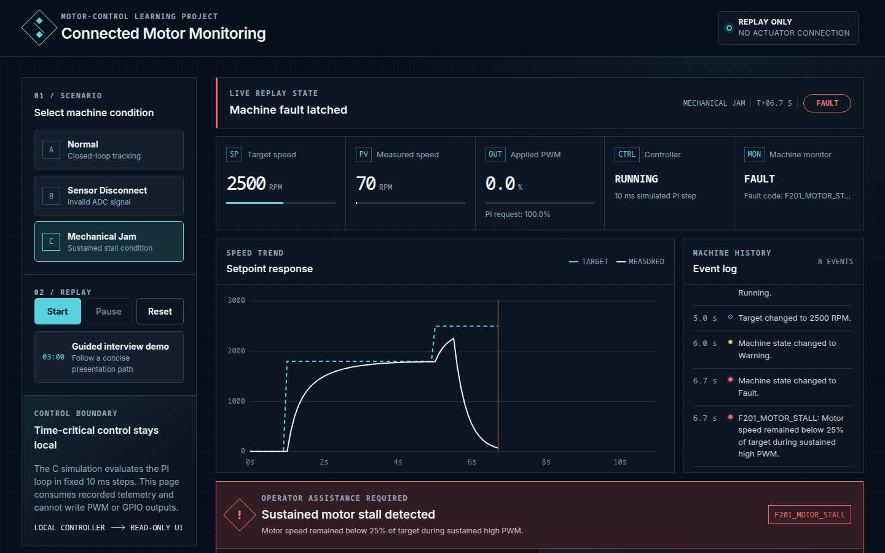

ELTE computer-science learning project
Connected Motor Monitoring Demo
A C motor-control simulation with repeatable faults, machine-readable telemetry, and a read-only operator dashboard.
The problem
Raw controller values do not tell an operator what changed or what evidence caused a fault. This demo turns a small simulation into a normal → warning → fault story while keeping control out of the browser.
10 msSimulated control step
3Repeatable scenarios
26Passing C tests
0Runtime services
Control and data path
Motor model + sensor
Simulated HAL
PI controller
Monitor + telemetry
Operator replay
Time-sensitive control and any real safety functions would stay local. The dashboard reads recorded telemetry and has no actuator path.
Observed dashboard behavior

Real local browser capture. At the fault transition, the PI requests 100% while the monitor overrides applied PWM to 0%.
Scenarios
Sensor disconnect
Invalid ADC data becomes unavailable, not zero, and latches an immediate fault.F101_SENSOR_SIGNAL_INVALIDMechanical jam
Low speed plus high PI request warns first, then latches after 750 ms of continuous evidence.F201_MOTOR_STALLTopics in the project
- PI terms and conditional anti-windup
- PWM, ADC conversion, and invalid inputs
- Fixed-step simulation and first-order response
- Warning versus latched fault
- Why browser replay is supervisory only
Honest limits
This is not real hardware, a safety system, a detailed mechanical-jam model, or a Tulip integration. With hardware, it would need board-specific I/O, scheduling, protection, calibration, commissioning, and independent safety functions. Slower telemetry and operator workflows could be sent to an operations platform such as Tulip.